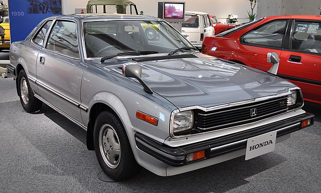
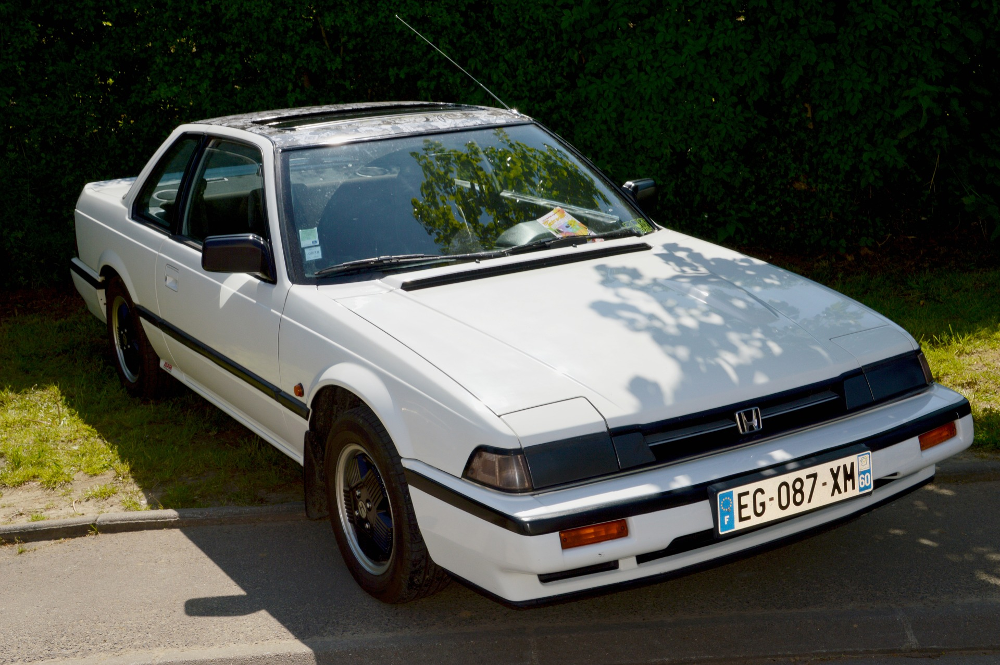

Prva Generacija (1978. - 1982.)
Prva generacija Honda Preludea počela se proizvoditi 1978. godine u Japanu. Dizajnirali su ga Shinya Iwakura i Hiroshi Kizawa kao niski sportski auto dugog prednjeg dijela i kratkog prtljažnika. Imao je 4 sjedala, iako su u njih stala samo malo veća djeca. Dizajn Preluda više je sličio mini-gran turismo automobilima. Suspenzija, kočnice i motor uzeti su od Honde Accorda. Inspiracija modela bio je uspjeh Toyote Celicae.
24. studenog 1978., Honda Prelude izbačen je na japansko tržište. Svjetska premijera Preludea bila je dva mjeseca kasnije, 1979., na AutoRAI motor šou u Amsterdamu. Prelude (uz Hondu Accord) bio je prvi auto s motor zapremnine manjim od 2 litre sa servo upravljačem. Prelude je također bio prvi Hondin model sa krovnim otvorom na pogon.
Uobičajeni motor na početku proizvodnje bio je 1.8 litreni redni četverocilindrični motor s 59 kW (79 hp) snage. U SAD-u se prodavao model s motorom snage 54 kW (72 hp). Moglo se birati između ručnog mjenjača s pet brzina te automatskih mjenjača s tri ili dvije brzine.
Prodalo se 313 000 Preludea iz prve generacije od 1978 do 1982. 80% automobila prodano je izvan Japana. Prva generacija nije zaživjela u Europi, ponajviše zbog svoje velike cijene.
Uglavnom, Prelude se iskazao kao dobar prvi pokušaj sportskog coupéa na prednji pogon.
Druga Generacija (1982. - 1986.)
Drugu generaciju Preludea dizajnirao je Masahito Nakano. Tijelo auta bilo je aerodinamičnije te su dodana skočna svijetla u prepoznatljivom stilu 80-ih. Bio je dizajniran kao sportski coupé budućnosti. Prednji dio je bio nešto kraći nego u prvoj generaciji te je automobil još uvijek bio nizak.
Druga generacija izašla je na Japansko tržište 25. studenog 1982., a na svjetsko tržište u ožujke 1983. godine.
Dizajneri Preludea trebali su smjestiti novu suspenziju na prednji dio auta zbog zbijenijeg prednjeg dijela te su to učinili pomoću ovjesa s dvostrukim nosačima (eng. double wishbone suspension). Zbog nove redizajnirane suspenzije, Prelude je bio bolji i brži u zavojima te je opravdao svoj sportski naziv. Kupci su također imali opciju uzeti Hondinu novu tehnologiju „A.L.B“ što je zapravo samo ABS.
Druga generacija dobila je veliko poboljšanje u snazi motora. U početku se Prelude prodavao s 1.8 litrenim rednim četverocilindričnim „A18A“ motorom koji je proizvodio 77 kW (103 hp) snage. Kasnije je u Japanu, Aziji i Europi Prelude bio dostupan s 2 litrenim „B20A DOHC“ motorom. Japanska verzija dostizala je 118 kW (158 hp). Kupci su mogli birati između ručnog mjenjača s pet brzina i automatskog s četiri. Druga generacija Preluda bila je značajno brža od prve, postižući 100 km/h ispod 9 sekundi.
Sve novosti učinile su drugu generaciju moderniju izgledom, aerodinamičniju, bržu i zabavniju za voziti od prve generacije. Prelude je tada postao pravi hit prodavajući više primjeraka u SAD-u nego što je prva generacija prodala u cijelom svijetu. U SAD-u se također počela prodavati „sport injected“ tj. „Si“ verzija koja je imala novi sustav ubrizgavanja goriva.